ЧТО ТАКОЕ CYBERCORE?
Cybercore — одно из современных проявлений киберпанк-эстетики, которое стало особенно популярным благодаря интернет-культуре и увлечению цифровыми технологиями.
Эстетика cybercore пропитана неоновыми огнями, ночными городскими пейзажами, гигантскими небоскребами и цифровыми интерфейсами, создавая атмосферу будущего, где технологии тесно переплетаются с повседневной жизнью.
ОСНОВНЫЕ ЧЕРТЫ CYBERCORE
- Неоновый свет
- Футуристические локации
- Атмосфера социального отчуждения и дистопии
- Цифровые интерфейсы
- Бионика и модификации тела
- Киберпространство и виртуальная реальность
- Хакинг
ЭМОЦИОНАЛЬНЫЙ ТОН CYBERCORE
Эмоциональный тон Cybercore отражает дуальность современного технологического мира, в котором присутствуют как увлечение передовыми технологиями, так и тревожность из-за их всеобъемлющего влияния на человеческую жизнь. В этом стиле преобладает атмосфера мрачной элегантности и антиутопии, где границы между реальным и виртуальным стираются, создавая смешанные чувства завораживающего восхищения и глубокой изоляции. Cybercore подчеркивает отчуждение в мире, где личная свобода ограничена технологическими системами контроля, в то же время вызывая восхищение его визуальной привлекательностью и комплексностью. Эмоции варьируются от тревоги и паранойи до моментов глубокого размышления о будущем человечества в условиях непрерывного технического прогресса.
CYBERCORE В МЕДИА
ФИЛЬМЫ
Бегущий по лезвию
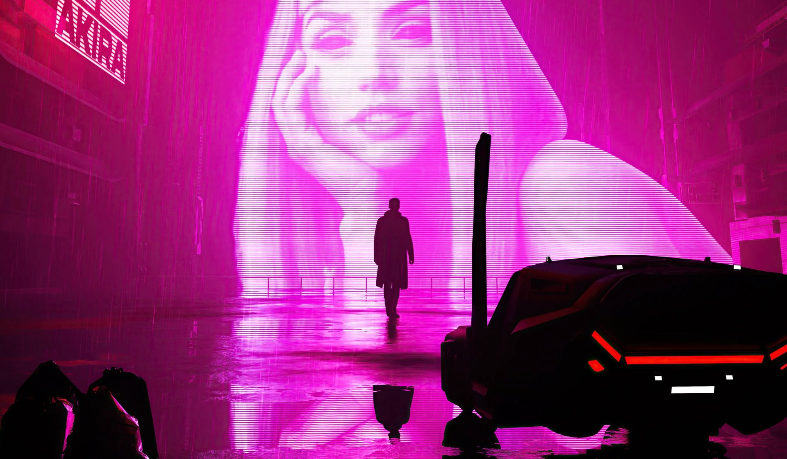События разворачиваются в мрачном мире с неоновыми огнями и дождем, населенном репликантами — искусственно созданными существами, которые практически не отличаются от людей. Фильм поднимает вопросы о том, что значит быть человеком, какова природа реальности, и исследует тему идентичности в мире, где технологии размывают границы между искусственным и настоящим.
Матрица
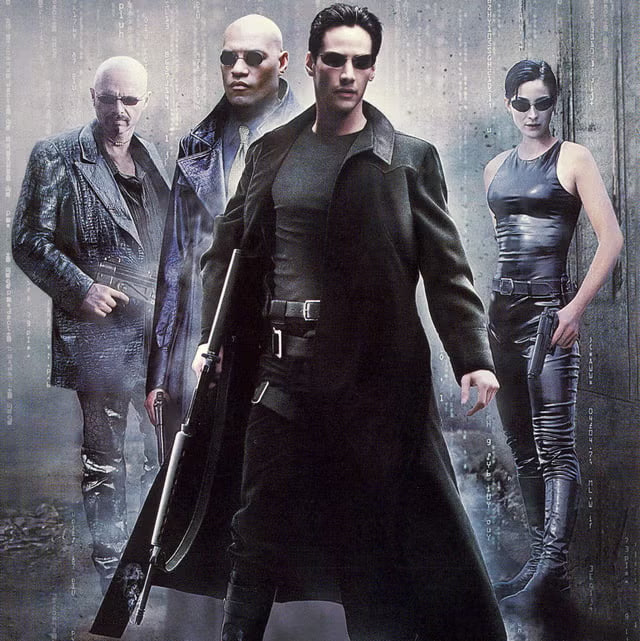Один из первых фильмов, исследовавших идею виртуальной реальности и цифрового мира. Главный герой, программист, попадает в киберпространство, где вынужден бороться за свою жизнь в мире программ и кодов.
Трон
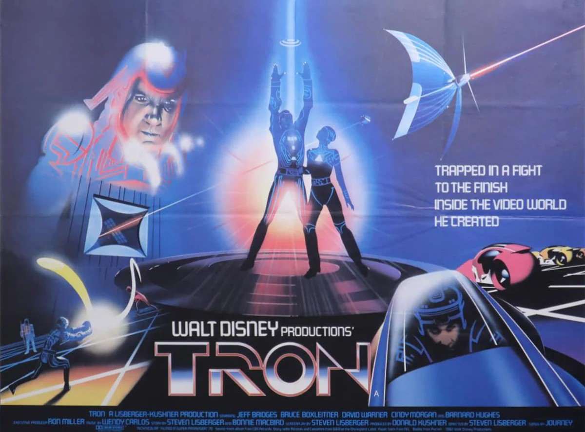Один из первых фильмов, исследовавших идею виртуальной реальности и цифрового мира. Главный герой, программист, попадает в киберпространство, где вынужден бороться за свою жизнь в мире программ и кодов.
ВИДЕОИГРЫ
Deus Ex
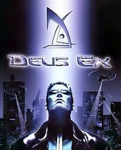Игра показывает мир, где кибернетические улучшения людей вызывают социальные конфликты. Корпорации и технологии контролируют общество, поднимая вопросы о человеческой сущности и свободе.
Cyberpunk 2077
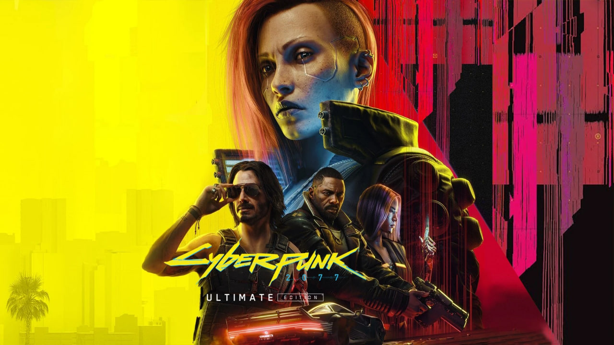Город будущего Найт-Сити с его неоновыми огнями, имплантами и мегакорпорациями — яркий пример киберпанк-эстетики. Игроки сталкиваются с реальностью, где технологии тесно связаны с жизнью людей.
System Shock
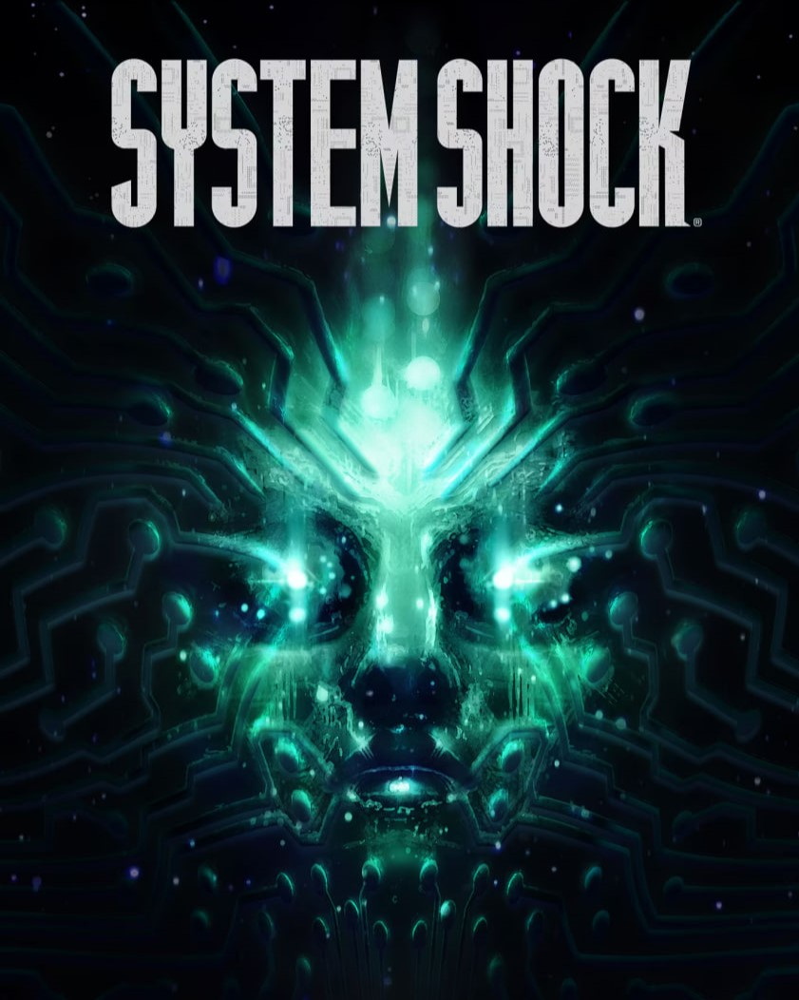Игра о борьбе с искусственным интеллектом, который вышел из-под контроля. Поднимает темы взаимодействия человека и машины в мрачной футуристической обстановке.
VA-11 Hall-A: Cyberpunk Bartender Action
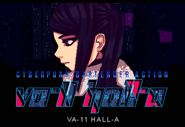Визуальная новелла в стиле киберпанк, где игрок управляет барменом, смешивающим напитки и общающимся с клиентами. В процессе игрок узнаёт истории персонажей и раскрывает мрачные детали антиутопического общества будущего.
Observer
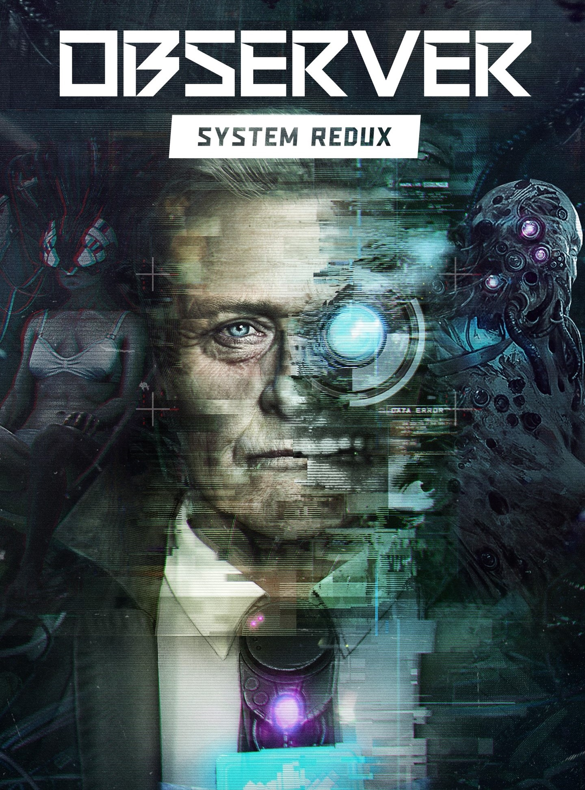Триллер, где игрок может проникать в сознание других людей, исследуя мрачный мир будущего с доминирующими технологиями и манипуляцией сознанием.
АНИМЕ
Призрак в доспехах (Ghost in the Shell)
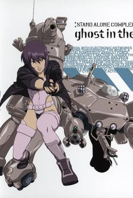В этом культовом аниме исследуются вопросы самосознания, идентичности и границ между человеком и машиной. Главная героиня, киборг-детектив, расследует случаи киберпреступлений в будущем мире, где технологии тесно переплетаются с человеческой жизнью.
Эксперименты Лэйн (Serial Experiments Lain)
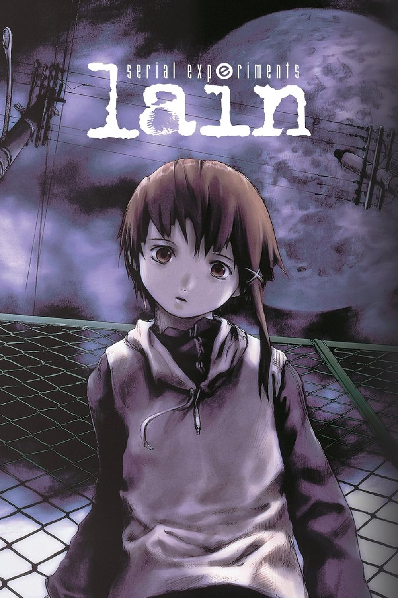Это загадочное и атмосферное аниме исследует влияние цифровых технологий на сознание человека и восприятие реальности. Главная героиня Лэйн начинает раскрывать таинственную связь между миром Интернета и реальным миром.
Эрго Прокси (Ergo Proxy)
В антиутопическом будущем, где общество контролируется высокими технологиями, главная героиня начинает расследование, которое приводит её к столкновению с тайнами об устройстве мира и природе человеческой свободы.
Технолайз (Texhnolyze)
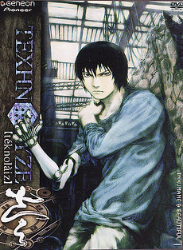Мрачное и философское аниме о выживании в антиутопическом мире, где людям приходится подвергаться биомеханическим модификациям. Аниме исследует темы отчуждения, отчаяния и поиска смысла в мире, раздираемом войной и технологиями.
Киберпанк: бегущие по краю (Cyberpunk Edgerunners)
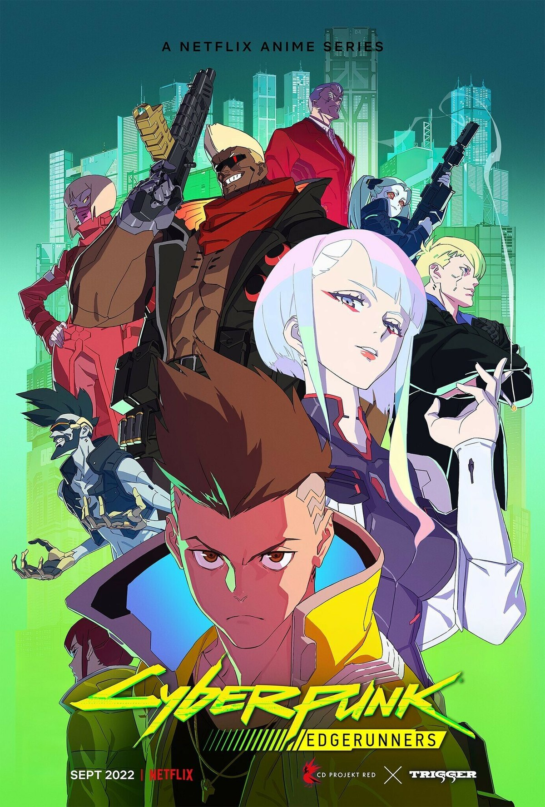Эта история рассказывает о борьбе молодого парня за выживание в мегаполисе будущего, где каждый шаг контролируется корпорациями. Под влиянием технологий он становится наемником, решившим изменить свою судьбу, несмотря на суровые условия киберпанковского мира.
МУЗЫКА
Synthwave

Жанр, вдохновлённый звуками 80-х, с элементами электронной и индустриальной музыки.
Cyberpunk Music

Музыкальные жанры, создающие атмосферу киберпанка с помощью синтезаторов и электронной музыки.
CYBERPUNK КАК ИСТОЧНИК ВДОХНОВЕНИЯ
Cyberpunk как культурное движение вдохновляет не только кинематограф и игры, но и моду, музыку и искусство, формируя особый стиль жизни и мировоззрение.
ГАЛЕРЕЯ
Здесь вы можете увидеть визуальные примеры эстетики Cybercore.